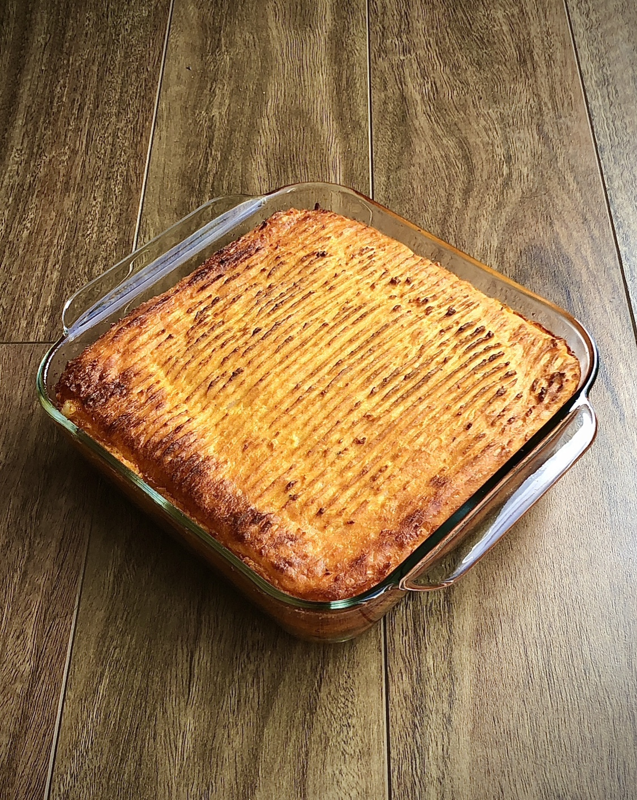

Shepherd's Pie

Description
A Shepherd's Pie consists of a 'filling' of browned lamb mince, peas and diced carrots, topped with crust of mashed potato and baked in an oven.
A good Shepherd's Pie will require a significant amount of preparatory work but the results are worth it for a weekend or special occasion.
Ingredients
- Lamb Mince (500g)
- 4 Yellow Potatoes (Medium-Sized)
- 2 Carrots (Medium-Sized)
- Frozen Peas (50g)
- 1 whole egg
- Milk (200ml)
- Flour (2 tablespoons)
- Butter (1 tablespoon)
- Thyme, Rosemary, Salt, Pepper, Olive oil
Steps
- Begin boiling water for potatoes.
- Small-dice both carrots, then peel all potatoes and cut the peeled potatoes into quarters.
- Boil all potato quarters in a pot with water (until tender).
- Put olive oil in a large frypan and begin frying up lamb mince, breaking it down well with a wooden spoon or other utensil.
- Add salt and pepper to lamb, and add diced carrots into the pan once light browning has started.
- Add thyme and rosemary and continue frying until lamb mince has reached a medium-heavy browning. Stir or toss occasionally to prevent burning or sticking.
- While the lamb cooks, drain all potato water and begin mashing potatoes in the pot. Add milk, the egg, butter, salt and a dash of pepper and incorporate them all well.
- As lamb and carrot mixture begins to approach final stages, add flour and incorporate well. Ensure no flour is left raw.
- Lower the heat slightly, add peas and mix well until peas are just thawed.
- Fill oven-safe dish of choice with meat filling, and then top with mashed potato mixture.
- Etch a pattern into the top of the potato with a fork. (Optional)
- Cook dish in oven for 20-25 minutes until potatoes are golden brown.
- Let rest for 5 minutes then cut up and serve. Ensure each plate has a proportional amount of crust and filling.